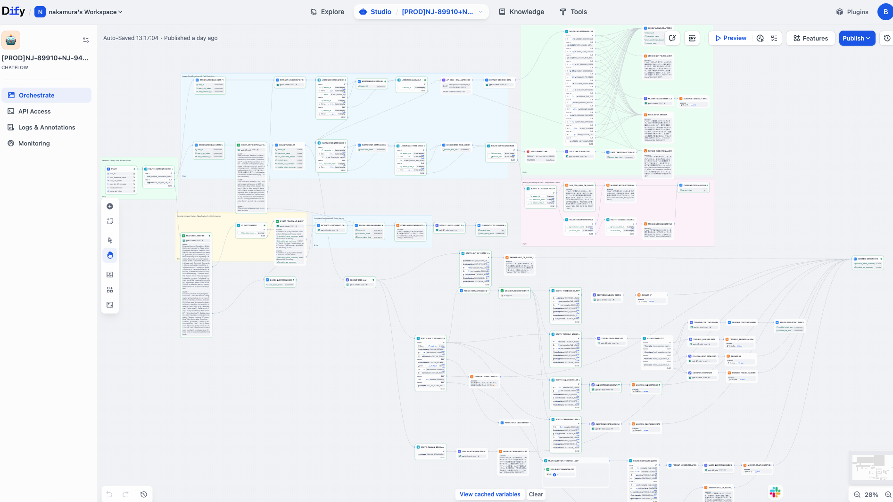

Student / User AI CS
User-side support with MCP refund eligibility
The user flow uses Dify RAG plus MCP-provided database context to decide whether a student is eligible for the NativeCamp coin refund process.
